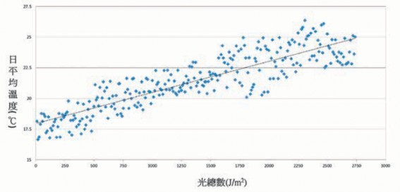
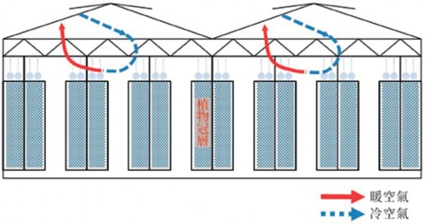
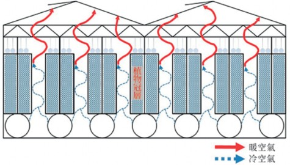
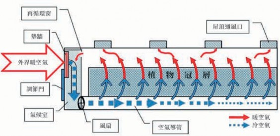
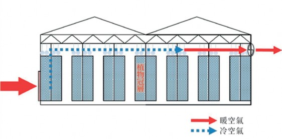
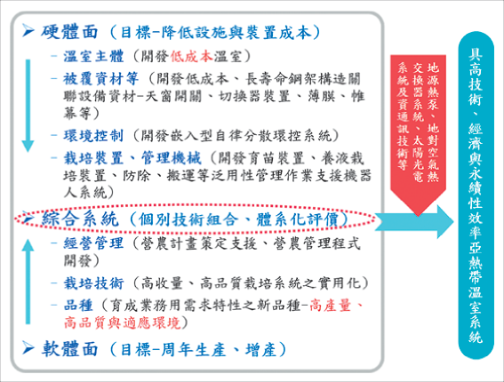

溫室栽培在未來將有可能為數十億人口帶來相對平價，卻又空前變化的高品質飲食生活。尤其是多數新鮮食用的蔬菜都將在「覆蓋下 (under cover) 」的環境栽種，以現況來看，溫室栽培已在西歐快速發展中，因受到人口、經濟與社會因素的壓力，使得受到保護的溫室栽培模式將戲劇性地擴展，但是溫室生產也相對地產生新的限制因素 (Stanghellini et al., 2019)。
在氣候變遷下，溫室栽培的發展將更多元化。溫室栽培仍將考量栽培成本而發展，但也會挑戰生產過程所需的控制面向，這將因現行科技的發展逐步實現。本篇文章首先說明影響未來溫室栽培幾項環境因子的新研發，接著針對溫室的未來、未來的溫室、次世代溫室種植概念與半密閉溫室等層面加以探討，詳細說明如後。
一、溫室栽培環境因子之新研發
影響未來溫室栽培幾項環境因子的新研究發展如下列說明：
（一） 光照
光照在作物生長上扮演相當重要的
角色，近年來針對有色被覆或光線對溫室的未來影響，有若干案例可供參考。 Miao (2017) 探討在溫室栽培中，以白色
被覆材質為對照組，結果顯示有色的被覆材質 (紅、黃、綠、藍與白)，對草莓果實品質、抗氧化能力與基因轉錄物 (gene transcripts) 均有影響，其中單顆果實重量並無差異，但對糖與有機酸含量有顯著影響；相較於對照組，在藍色被覆材質下，總糖含量 (SUG) 提高10.39％，而總有機酸 (ACID) 降低16.58％；在藍色被覆材質下生長的果實比在黃色與綠色被覆材質下生長的果實具有顯著較高的SUG含量與較低的ACID，並且具有最高的SUG/ACID比11.46。有色被覆材質對生物活性化合物 (花青素anthocyanin、類黃酮flavonoid、酚類phenolic) 含量與抗氧化能力有顯著影響；在紅色被覆材質下檢測到最高的生物活性化合物含量，其所生產果實總酚、總類黃酮與總花青素含量分別比對照組增加 23.10％、25.37％與74.11％；在紅色被覆材質下生長的果實抗氧化能力最高。在整個果實發育階段，在紅色與黃色被覆下生長的果實具有比綠色、藍色與白色被覆下生長的果實較高的蔗糖磷酸合成酶 (sucrose phosphate synthase, SPS) 與蔗糖合成酶 (sucrose synthase, SS) 活性。在綠色被覆下生長的果實中酸性轉化酶 (acid invertase, AI) 活性高，而在發育過程中下降。藍色塑料膜在綠色階段主要增加FaSPS與FaAI轉錄物，降低FaSS的表現，並提出有色被
覆材質可調控類黃酮生物合成路徑中所涉的基因表現，特別是在半紅與紅色階段的 FaPAL、FaF3H、FaFGT與FaMYB10。
Ilic et al. (2015) 探討有色遮光網對植
物葉片參數與番茄果實品質的影響，以商業栽培用光選擇性網 (具40％相對遮蔽的4種不同顏色，珍珠、紅、藍與黑色遮光網)的概念，在南塞爾維亞 (巴爾幹地區) 的番茄夏天栽培 (在具1,661μmol m-2 s-1光合光子通量強度的高太陽輻射 (910Wm-2) 下) 進行研究。該試驗目的在確定不同的環境控制技術 (有色遮光網作為網室或整合有色遮光網的塑膠布溫室)，探討如何影響在南塞爾維亞所栽培番茄果實的植物參數、生產與品質特性。根據結果顯示空曠田間塑膠布隧道植物 (控制) 的葉面積指數 (leaf area index, LAI) 介於4.6～5.8間，而具紅色網的網室中者具有7.9～8.2的最大的葉面積指數值；遮光種植下葉片一般比控制有較高的葉綠素與類胡蘿蔔素總含量；在珍珠色 (7,215.82μm)、紅色 (7,099.00μm)與藍色 (6,802.29μm) 網下種植的番茄果皮厚度與其他處理方法及控制 (6,202.48μm)相較顯然較高。在整合紅色網塑膠布溫室所種植番茄，發現有最高濃度的番茄紅素 (64.9μgg-1 fresh weight)。塑膠布溫室與空曠田間 (控制) 的番茄生產有1.09～
1.10的平均口味指數 (taste index= °Brix/ (20×acidity)+acidity)，較不同顏色遮光網為處理所確定的數值顯著較高。因此，根據結論指出，採用紅與珍珠色光選擇性網，可為植物生長創造最佳的生長條件，並生產果皮厚度較厚、茄紅素含量最高與口味指數水準令人滿意的果實，而且可以更進一步在設施栽培中實現。
歐美許多新的溫室都裝有漫射玻璃、
具有季節性塗層或其他手段，以確保進入溫室的光能夠漫射。但是，漫射光到底有什麼好處呢？為了清楚瞭解漫射光對栽培意謂什麼，首先必須知道什麼是漫射光。漫射光是指光的分布，當陽光直接照射在溫室上時，光線也會直接入射，更加集中。而漫射光是從各個方向進入溫室，例如在多雲時，光是漫射的，但是光的強度因此較小。作為種植者，自然不希望依賴天氣，因此可以使用網幕、季節性塗料或其他材料以使入射光線漫射。荷蘭瓦格寧根大學及研究中心的海明 (Silke Hemming)博士在Ludvig Svensson公司規劃的一個場合，談到溫室中漫射光的好處並澄清有關漫射光的困惑 (HortiDaily, 2020) 如後。漫射光有什麼影響？已進行的研究涉及相同數量的漫射光與直射光的影響。在晴朗的日子，漫射溫室被覆下黃瓜作物的光截

取比在直射光下較高，尤其在中間冠層部分。而在陰天漫射光與直射光處理間光截取並無差異。中間冠層的光合作用率在漫射光下比正常光條件下 (500μmol PAR m-2 s-1，其中PAR係指光合作用有效光輻射 (photosynthetically active radiation)，是直接影響作物生長速率的光波段 (400～ 700nm)，與光合作用有很密切的關係) 更高。就溫室空氣溫度而言，直射或漫射光間沒有差異，因為其光強度大致相同，但是對於植物溫度則有所不同。特別是在白天中午，直射部分的植物溫度要高於漫射部分的溫度，漫射部分的植物也較無熱緊迫。在黃瓜作物中，漫射光的所有影響都為栽培帶來良好結果，尤其產量比在直射光下高出8～10％。漫射光也正面地影響盆栽菊花與其他盆栽植物的生長 (Hemming et al., 2008)，除生長更快，並產生更高的生質量，且品質較高。另有人探討使漫射光在番茄栽培中有效的各種因素，其審視各個方面，例如水平光分布、垂直光分布、作物的光合作用能力，以及植物型態的適應性等影響，因此，種植者必須學會利用以不同方式的漫射光種植。該研究表明，漫射光對所有前述方面都有影響。漫射光導致更好的水平與垂直光分布，同樣的，葉片平均而言會攔截更多的光。這反過來導致漫射光下葉片的光合作用能力高於直
射光者，番茄中較高的光分布也導致較高的產量。雖然漫射被覆材料並未影響溫室的能源使用，但是產量的增加卻導致較高的能量效率。但是仍然存在一個問題：如果使用漫射光並增加光的強度會怎樣？栽培試驗中，允許更多的光進入，保持更大的溫度累積，並使用更高的水分含量，觀察到大部分的正面進展，品質更佳及生長更好等。而進一步栽培試驗中，將一切條件都進一步提高：光強度更高，溫度累積更高且水分含量更高時，栽培結果超出極限，效果適得其反。
（二） 光合作用與環境控制的交感作用
光合作用光譜及其對環控農業生產的影響，已經超越光生物學的基礎知識，就植物對光質量的反應有更深入的瞭解。例如，在佛羅里達大學，研究人員研究發現光合作用光譜與用水效率 (water-use efficiency, WUE)有關。根據Clavijo-Herrera et al. (2018) 的研究，透過操縱紅、藍與綠光的比率，可影響WUE，藍光降低光合效率可能會抑制生長，從而降低WUE，其可能係透過增加氣孔導度 (一種與蒸散作用密切相關的植物功能)；而綠光則抵消對藍光的一些反應，以提高用水效率，但這些都是概念性的研究而不是現實場域的情景，栽培者通常不會在如此高的藍光百分比下
進行種植，但必然對未來光生物學研究產生影響；另外，綠光為植物提供廣泛的功能也值得關注 (Mardenkro The Netherlands, 2019)，綠光反射程度並沒像原先所想的那麼高，葉片不會吸收像藍光或紅光相同程度的綠光，但經由整個作物總體吸收，幾乎沒有任何差異，係因反射的綠光繼續透過該作物的路徑，大部分被用於光合作用。藍光與綠光的比例會影響植物的延伸生長，較少的綠光會減少植物的延伸生長，而較少藍光則刺激延伸生長。目前世界各地的玫瑰栽培者正使用ReduFlex Blue (ReduSystems®公司產品，部分抑制藍光使藍光較綠光比率較低) 以開發較長的花莖，而ReduFlex Green (ReduSystems®公司產品，部分抑制綠光使綠光較藍光比率較低)可被用於創造結實的植物。
（三） 溶解於水二氧化碳葉面噴施的新技術
一項有異於一般熟知的二氧化碳施肥
(CO2 fertilization) 且有趣的創新試驗是溶解於水二氧化碳葉面噴施技術，它可促進植物生長 (CO2 GRO Inc., 2018)，根據美國加州St Cloud State University科學試驗結果表明，相較於無富含CO2水的噴霧與無噴霧控制植物處理，噴灑在蘿蔓萵苣葉上富含溶解CO2的水，其CO2電導率 (轉移可用性)
提高8倍。加州因此每年可多生產1～2作的萵苣，或每年增加10～20億美元以上批發萵苣的收入，而且每單位萵苣產量使用更少的水量。
二（一、）溫節室能的溫未室來的需求
根據最近研究 (Krishna Bahadur et al., 2018) 顯示，目前全世界所生產的蔬果還不能滿足維護全體人類健康營養所需。該研究以2016年聯合國糧食及農業組織 (FAO)食物平衡表，估算全球目前農業生產與哈佛公共衛生學院理想供應世界大眾「健康飲食」(healthy eating plate) 間仍無法平衡，蔬果生產量必須以3倍成長才足以提供人類的健康飲食，且隨著世界人口持續增加，需求會更提升。雖然目前只有部分蔬果被栽培於溫室中，估計全球的設施栽培面積將繼續增加，自2009～2017年數年間，已成長約500％ (Hickman, 2018)。近年來能源有效利用受到舉世關注，因此溫室栽培逐漸朝向節能、低成本地區發展，未來亞洲、非洲的暖溫帶、亞熱帶，及熱帶地區之溫室農業將迅速發展，因此開發節能低碳溫室具有迫切性。節約用水已成為溫室產業持續發展的一項重要驅動因素，尤其在乾旱與半乾旱區域。為了節水，收集與再利用灌溉水是必要的，這在無土栽培中

最能有效達成，但對特定的國家而言，成本與可得的技術知識仍然是一項限制。溫室生產可以高度永續，但是改善永續性與循環性 (circularity) 需要更多的投資與誘因 (EIP-AGRI, 2019)，而生命週期評估 (life cycle assessment, LCA) 可以幫助引導這些發展。在北方國家，即使能量效率已大幅提升，節能仍然十分重要。在荷蘭溫室園藝的CO2排放從2010年的810萬噸減少至 2015年的570萬噸，而2015年每單位產品的主要能量使用比1990年少58％ (Marcelis et al., 2019)。其節能的最重要的方法是：1.最大化自然日光的使用；2. 最大化絕緣，以保溫節能；3. 藉由不同技術與控制策略以有效使用能量；及4. 以永續能量來源替換化石燃料。
（二） 糧食安全的問題
即使設施栽培逐漸增加，但仍不能解決世界食物問題，尚須配合改進日常糧食生產，如玉米、小麥、稻米與莢豆 (pulses)以達到需求。這主要係因溫室栽培的作物價格仍高，對大多數全球人口來說無法負擔。然而，溫室園藝對所謂「營養安全 」 (nutrition security) 卻很重要，亦即確保充分的維生素與礦物營養，考量消費者偏好與經濟發展，將要求增加溫室作物品項，亦即從「新 (舶來品) 」蔬菜至特殊 (醫藥
性) 作物以提供質量的滿足。另外，高消費能力的市場對可靠、整年提供優質產品的供應需求高，除品質的視覺觀感面向，例如由於降雨、冰雹或曬斑損害的減少外，消費者逐漸要求高度食品安全，尤其關注化學製品減量的議題。
（三） 水源供應的問題
當消費者逐漸瞭解現行農業耕作行為 (包括在設施園藝) 對環境的影響與永續性的缺乏，基於社會與法規壓力，慣行栽培農產品將逐漸被限制，並限制以化石類燃料燃燒產生之加熱與電力使用。尤其，水源不足或是與其他經濟部門的競爭，也影響農業的可 (得) 用水，設施栽培具有較高的用水效率，因此在乾旱地區的溫室也逐漸增加中。還有，缺乏水源的狀況，更讓風扇水牆式蒸發冷卻逐漸不被人們所接受。
（四） 零排放栽培 (zero-emission- cultivation)
溫室栽培是水與肥料使用方面的高
投入系統。世界範圍內日益嚴重的水資源短缺與對淡水的競爭使人們認識到，用水效率是溫室園藝的必要條件。由於肥料與植物保護產品的排放，將溫室中的排放水釋放到環境中也會損害地表水與地下水的品質。在無土栽培中，營養液可以循環
使用。因此，它們是高效且永續的生產系統。根據與該國政府達成的協議，荷蘭種植者必須在2027年之前實現零排放。儘管為解決與循環廢水有關的技術 (安裝) 與生理 (生長) 問題進行許多研究，但大多數人都對完全循環使用營養液猶豫不決。在荷蘭為減少營養物質與農藥排放量的法規已迫使園藝產業採用水資源管理的新方法，其中瓦格寧根大學溫室園藝研究中心 (Beerling et al., 2017) 曾測試一種零排放的溫室栽培。在此種零排放的溫室中所有排放水被循環再使用。在該參考溫室中，按照目前的實際作業與該國2015年氮的排放標準偶爾排放會發生，所排放的水也被處理以除去農藥。該計畫在2014年7～11月成功啟動零排放的黃瓜種植，並自該年12月種植甜椒。零排放溫室的所有水從開始就被完全再循環，而在參考溫室中所有排放水在前8週期間被排出，而且在春季排放也發生。直到第二個試驗的中期評估點 (甜椒：2015年7月7日) 結果指出，沒有遭遇循環所造成的問題。此外，零排放與參考溫室間在生產或品質上並沒有差異。其進一步工作是雙重的，首先甜椒種植第二階段繼續採用零排放種植策略，包括制定產季末期的種植策略，以確認管理基質水分含量與排水盆的體積。此外，同時研究除惰性岩以外其他基質的零排放策略是否可行。
（五） 能源效率的提升
有一值得參考的評估試驗 (Hirich and Choukr-Allah, 2017)，係針對阿拉伯聯合大公國 (United Arab Emirates, UAE) 在沙漠狀況下溫室與網室的水與能源使用效率進行評估。其以裝設風扇水牆及遮光網系統的高技術溫室，配合裝設噴霧系統的低技術網室，進行水與能源使用效率比較，種植三種作物以為評估。以小果番茄與甜椒及網室內的胡瓜作為試驗材料，結果顯示高技術溫室栽培具有最高用水量 (用於冷卻過程)，其消耗分別比甜椒與小果番茄所需灌溉水更多2.6與3.5倍的水，然而低技術網室內噴霧系統則消耗較少的水，大約是用於胡瓜灌溉所需水量的75％。而能量使用上，高技術溫室明顯較高，為低技術網室栽培的32倍。
（六）冷凝灌溉的應用
值得關注的冷凝灌溉應用係以色列農業技術公司Roots Sustainable Agricultural Technologies Limited推出世界上第一個太陽能或風力運作，且配合可「脫離電網」工作的冷凝灌溉 (Irrigation by Condensation, IBC) 系統 (Roots, 2019a)，能夠維持作物整個生長周期。該系統以中小型規模農戶種植糧食作物進行設計，所需灌溉水分僅由空氣中水分經由冷凝技術而獲得，即使是

在偏遠的半乾旱地區，因水資源短缺與品質問題，且在無法獲得電網電力或灌溉用水下，亦可實際應用。
（七） 小規模農場的發展
Tanner (2018) 主張環控農業 (溫室農耕) 是小規模農耕的未來，對於選擇此條道路的栽培者而言，成功與否將與環控環境及農業技術的使用有密切相關。儘管大農場生產大量農產品，但小農場正走入主流，聯合國糧食及農業組織報告指出，全球不到1公頃的農場占所有農場的72％。美國農業部農業統計局每5年進行一次的農業普查在2012年顯示，小規模家庭農場占美國農場總數的88％，意謂小規模農場提供一個有吸引力的選項，因為該種農耕可以發生在世界各地，即使在人口密集的地區亦然。以小規模農耕來看，可全年在任何地方當地種植，農產品係走向新鮮、價格合理與永續；較小的農業系統也比較靈活，可適應不斷變化的氣候條件，並顯現比大農場更強的適應力。以一個規模較小的種植型企業可以發揮新的經濟作用，將使農業更具商業價值。然而農業科技如何幫助呢？技術性創新可成為小規模農場成功的關鍵驅動因素，協助栽培者在消費者族群中找到有價值的利基，創造更真實、更簡單且更接近家庭的溫室農耕操作，因
較小的種植空間，比大種植面積更易於控制，透過應用農業環境控制，栽培者可以在更低的成本下，以更少的努力驅動更高的產量產出。
（八） 去中心化 (decentralization) 操作的發展
由於操作農場的成本下降與在較多環
境 (尤其較靠近終端消費者) 生產影響，意謂農產品創造已變得更去除傳統的中心化，亦即將產生較少供應鏈的衝擊、更多的新型態農民及較接近消費者的農產品 (Krishnan, 2017)。因此，類似Freight Farms公司的城市農場、模組農場及垂直農場等，創造更多當地網絡與可以補充大農場農產品的供應，並遠比最小農場便宜 (僅為該研究最小農場的六分之一)。
（九） 室內農耕 (或垂直農場)
Koltsova (2019) 指稱室內農耕是一種新的供應鏈，這個生產模式與傳統農耕最大區別為室內農場可以儘可能接近市場在消費者居住的地方營運，即使是在大城市的中心。所有必需的蔬菜都可來自一個當地的農場，而不需擁有一條長的供應鏈，而且新鮮農產品的來源可遍布全世界，成為一種新的供應鏈。由於室內農場的概念涉及當地消費，因此經營者不必為了運輸
原因而收穫未成熟的農產品 (植物並沒達到它們全部潛力的最佳質量)，因此它們更能顯現應有的美味與營養。由於目前整個零售業態都是基於過剩生產，因此番茄、黃瓜與其他蔬菜可以隨時運送到家，一旦沒有人購買這些產品，有40％農產品將被丟棄，使得食品成本提高進而價格昂貴。隨著室內農耕的發展，消費者可以成為家庭農場的一員，為一定數量的當地家庭提供新鮮農產品，在這種情況下，種植者可計畫性生產農產品，維持生產與銷售需求的平衡。如果想減少浪費，就應該要能預測消費者的未來短期 (例如1週) 需求。
（十） 利基生產可考慮的溫室作物
有利可圖的溫室作物是什麼呢？台灣是全世界數一數二的蝴蝶蘭輸出國，蝴蝶蘭似乎還是有利可圖的溫室作物，但什麼其他作物 (第二作物) 是值得發展的特定溫室作物？值得深思。根據國內104年農林漁牧普查資料，食用菇蕈栽培業與花卉栽培業是平均每家全年銷售服務金額最高的前兩名，分別達531萬元與236.5萬元。溫室生產常見的作物有番茄、胡瓜、甜椒與花卉等，而另類作物的定義可能因人而異。畢竟，溫室中種植的幾乎所有植物都可能起初是一種利基產品，直到更廣泛受眾發現其潛力為止。這也意謂，如今被視為另
類作物者很容易成為每個種植者視為進入新市場有力保證的下一個大問題。值得一提的是美加的傳統溫室生產者越來越多轉向大麻生產 (Drotleff, 2019)，大型溫室種植者正尋求進入大麻市場，因為他們希望獲得比傳統產品與觀賞植物更高的利潤。根據美國Greenhouse Grower公司所進行2019年調查的觀賞植物貿易資料，該國前100名觀賞植物溫室公司中約有13％計畫在未來3年內生產大麻。如果秋海棠與漿果等產品的供應減少，係因這些生產商正將溫室空間轉換供大麻，那麼這樣的轉變甚至可能意謂溫室中傳統作物的價格將開始上漲。 Sparks (2019) 指出一些國外目前正被視為另類作物的選擇如下，其風險／回報因素的考量可能有助於釐清是否值得追求。
美食與藥用菇類的市場需求正大幅增
長。如果正確設置設施，生產的風險就不會很大，市場建立可能是最大的挑戰。另一個優點是，某些杏鮑菇與香菇品種的收益極高。而且，如果可以與所在地區的農貿市場建立連結，則可以實現快速銷售。然而，這些高回報也給它帶來風險，儘管消費量並沒有以同樣的速度增長，但可能仍有相當一部分生產進入菇類。雖然美味菇類可以賺錢，但種植者需要嚴格的生產控制，以及高壓滅菌器 (一筆可觀的投資)

以對種植介質進行滅菌。
從總體上講，草莓與其他漿果作物的
生產當然不會被視為另類作物。但是，儘管大多數國際漿果生產都是在某種形式覆蓋下進行，但在環控種植的漿果並不多。品種選擇非常重要，種植者必須瞭解最理想的栽培技術，以創造高品質的果實生產，尤其是櫥架壽命較長的產品，所有這些相關的成本投入使其很難獲得高利潤。
不斷增長的精釀啤酒熱潮使啤酒花成
為流行作物選擇。溫室種植啤酒花的優勢在於它為種植者提供更好的機會以提供濕啤酒花 (這意謂它可以在收穫後的24小時內被運送給釀酒商)，這對於啤酒廠來說意義重大。但是由於自動化技術的發展滯後，啤酒花通常需要手工收穫。啤酒花很容易成長，但涉及大量勞動力。像任何作物一樣，維持栽培實際運作很重要，所涉及的勞動力是啤酒花能否獲利的問題所在。由於很難獲得高產的啤酒花，而且該作物的蟲害也很難管理，因此仍然需要努力培育合適的啤酒花品種，並設定最理想的環境參數。
人蔘作為療癒藥草與補品銷售時，具有巨大的獲利潛力，因此被稱為「綠
金」。對於空地較小且具有耐心的種植者而言，這種植物可以獲得豐厚的回報。為什麼要有耐心？由於人參的生長可能需要長達6年的時間，那是人參根完全成熟需要的時間，因此它必須等到那時才可收穫以供食用。有些人覺得那超出時間進展設定，因此向其他種植者出售幼根，以在可管理的時間內帶來一些投資回報。據報導在6年的時間裡，種植者可以在半英畝的土地上，從種子、小根與成熟根中賺取高達 10萬美元的收益。
香草蘭豆是一種異國情調的東西―
蘭花科唯一的可食果實― 並且是許 多日常美食與節日佳餚中必不可少的成分。大多數天然香草來自馬達加斯加 (Madagascar) 或其他一些地區，喜歡潮濕與熱，需求遠遠超過供應。香草是一種勞動密集型作物，因為必須手工授粉，一年中香草花只有一天開幾個小時。香草莢收穫後，必須將豆浸入熱水中並進行乾燥，這些豆在變綠時看起來像四季豆 (string bean)。它們被包裹在毯中，保存在密閉的容器中，並在溫暖的處所保存約2週。然後，這些豆必須在陽光下曬乾長達2個月。該過程全都是手動操作，可能會出錯：雨水可能會中斷調製過程，而過多的濕氣則會造成黴菌。透過將調製的香蘭豆浸泡在
酒精中製成的香草提取物被廣泛用於烘烤與食品調味，但它也有其他用途。它被用作一種天然的抗微生物藥物，目前正被測試作為一種針對血液疾病 (鐮狀細胞性貧血sickle-cell anemia) 的療法。在化妝品行業，調香師添加香草以讓香水甜美浪漫。香草的價格可能因該植物無法預料的授粉結果、缺乏保證恆定產量的基礎設施，以及極端天氣事件 (如旋風會不時地消滅馬達加斯加的作物) 而變化很大。香草作為溫室作物肯定仍處於起步階段，荷蘭研究人員指出為香草生產而建立的溫室需要永續的熱源與高架灌溉系統。在溫室中種植香草的好處是更有可能獲得均勻的作物。但是，缺乏好的植物材料與整體知識仍然是障礙。
綠葉蔬菜是另一種不會被認為是另
類的作物。但是，越專業，就越有可能找到利基市場。通常這些種植者的許多種植面積不到半英畝，但很容易實現多樣化的作物選擇並在其他種植者中脫穎而出。特種綠蔬的學習曲線很低，通常可以快速獲得作物的周轉。風險在於潛在的大規模競爭，因為大多數室內水耕栽培法的早期參與者都從綠葉蔬菜開始，這可能導致市場供過於求。
（十一）針對溫室環境的作物育種
如何將植物遺傳行為與環境的交感作用達到最佳化，通常很少被關注 (Kuack, 2017)。目前環控農業的主要侷限之一，係尚未針對該種栽培環境進行發掘植物遺傳特性，以育成適合該環控場域之植物品種。現在環控栽培的植物品種通常是為露天田間栽培而開發，因此當其被栽培於溫室環境時，無法充分發揮其遺傳本質。因此為避免這樣的問題，近期有若干研究已開始開發次世代植物，有可能透過改變環境，操控同一套遺傳本質，以開發不同的產品，並透過調節光譜，將綠葉改變成紫色，或讓植物積累特定風味、質地或營養保健 (nutraceutical) 成分。針對此議題，未來應積極尋找或開發供節能、人造條件下足以支持生長的植物或品種。研究人員也需要考慮環境限制，亦即處理植物效率，依據綠光、遠紅光與紫外光等作用，配合植物需求，機動性調整光照處理。客製生產的發光二極體，將使作物栽培中光譜利用更有效能，就像提高食物／醫藥作物特定新陳代謝產物的含量，或是改變觀賞植物的視覺觀感方面 (Dieleman et al., 2016)。研究人員亦應聚集在農產品，創造次世代獲利的栽培者，並針對消費者在意更即時可得與更高營養的作物。至於與此相關的光照設備廠商，應與研究人員及植物育種
這些植物繁殖，可以創建藥物農場，從中
項研究 (Sua, 2015)，證實貨架上穩定的藥

者協力發展溫室栽培的專有品種，在提供生長燈商品時，同時供應其下生長表現最佳的種子。
（十二）開發溫室植物的特殊機能
植物新陳代謝有三個層次。在第一個層次上，植物產生足夠的醣類以維持生存；在第二個層次上它們產生足夠的葡萄糖用於維持並開始生長；在第三個層次上，植物產生它們需要生長並開始產生二次代謝物的更多醣類 (它們是更為人所知的維生素與抗氧化劑)，對人類的健康與福祉具有重要意義。荷蘭為創造溫室園藝的新商業模式，已由WUR溫室園藝業務部門在「園藝藥房 (the greenhouse pharmacy)計畫」中開發基於高價值植物藥作物有效生產的新模式 (Poot, 2019)。他們致力於從植物中生產天然藥物，也包含天然色素、香味與香水的生產。此外，他們探索新作物的可能性，例如黑辣椒與異國情調的水果。該計畫的重點最初是在食品成分生產中開發新的商業模式，現在WUR已掌握香草的種植過程與市場策略，而且荷蘭香草種植者正接手，WUR可以透過開發該等作物的生長配方以擴大該計畫的範圍。類似思維的運作，美國賓夕凡尼亞大學研究人員在生物材料雜誌上所發表的一
物可從萵苣製成，他們提供FDA核准予人類使用相關方法的可行性，藉由採用冷凍乾燥的萵苣葉子生產一種促進耐受凝血因子 (clotting factors) 的有效藥物，可以供血友病患者服用。同樣是賓夕凡尼亞大學的研究，Daniell et al. (2020) 開發一種更有效、方便且負擔得起的治療方法，以在萵苣葉中生產一種蛋白質藥物供治療肺動脈高壓 (pulmonary arterial hypertension, PAH)症狀，罹患此症者肺動脈中的高血壓會造成心臟更加努力工作，將血液泵送到肺部與身體其他部位。這種病很少見但會致命，目前的治療方法昂貴，具有副作用與不方便的送藥方式，根本沒有治癒方法。為創造人類可以安全攝取的藥物，該研究利用將煙草轉向萵苣為基礎的創新平台，可以在植物葉片中生長多種具有生物醫學意義的重要蛋白質 (由血管收縮素轉化酶 2 (angiotensin converting enzyme-2, ACE2)及其蛋白質產物血管收縮素 (1-7) 組成的口服蛋白質藥物在PAH的動物模式中，可以降低肺動脈壓力與重塑 (remodeling))。該系統實體上透過利用目標基因轟擊植物組織，促使葉綠體吸收基因，然後穩定地表現該蛋白質，從而發揮作用，在符合 FDA標準的生產設施中生產基因工程植物 (genetically engineered plants)。然後，將
研究人員可以收穫、乾燥與加工葉片，從而製成可以放在膠囊中或懸浮在液體中供作口服藥物的粉末。同樣地，煙草植物可以生產伊波拉病毒疫苗 (Ebola vaccine)， Brooks (2015) 報導有關生物醫藥 (bio- pharming) 正如何幫助提升藥物生產的速度以對抗該疾病的情況。看起來像普通溫室但實際上是一家晝夜不停的伊波拉病毒疫苗工廠，其在肯塔基的一個設施內，植物正被注射一種蛋白質以刺激它們生產用於實驗藥ZMapp的三種抗體之一。
三（一、）未溫來室的的溫多室元化
全球變化的氣候與可用收入的差異將繼續刺激我們所看到不同溫室間的多元化。大部分新的防護栽培地區，一如往常，會是在最便宜處。另一方面，將採取此機會的優點，並挑戰符合需要該生產過程遞增的控制面向。那將在現行的溫室領域因科技的累進實施而達到：與藉由從下面既有甚至較大者增加階層，並提升高度而與建築金字塔沒有什麼不同。
（二） 溫室生產必須倚賴再生資源
預測未來一直是棘手的。然而，溫室發展的現在傾向允許關於尖端金字塔 (不久將來的高科技溫室) 的一些臆測。溫室
園藝將以所有資源最有效率的使用確保高品質產品的永續生產，其係植物生產永續強化的最高範例。這樣，溫室園藝將為世界全體作物生產保持其引導與趨勢設定的部門角色，因而在開放田間栽培方面為可能的應用提供創新。當藉由化石類燃料加熱被逐步淘汰，溫室生產所需的額外能量必須來自可得的再生資源，像是生質量或地熱與逐漸地從永續生產所獲得的電力。加上發光二極體 (LED) 頗有進展的表現，將確保提供增強與非季節生產的補光更為廣泛。能夠冷卻與加熱的熱泵，將因勝過加熱器而被使用，並將在目前沒有加熱的溫室區域被安裝。例如，以色列農業技術公司Roots Sustainable Agricultural Technologies Limited利用地源熱交換 (ground source heat exchange, GSHE) 原理，安裝一個閉迴路管道，其中下部安裝在溫度穩定的深度土壤中，上部安裝在目標作物的根部區域 (Roots, 2019b)。利用此種根區加熱與冷卻技術 (root zone temperature optimization, RZTO) 加熱 (冬天時) 與冷卻 (夏天時) 例如蔬菜、藥草與花卉等作物的根部，可達全年保持相對穩定與有利的優化根區溫度，因而提升植物產量。在以色列阿拉瓦 (Arava) 沙漠極端高溫下的羅勒生產試驗中，合適的根系冷卻能夠將植物死亡率降低60％以上，與未冷卻的對照組
制。人工智慧、機器學習與大數據的使用將改變溫室被控制的方式。由於沒有天氣
灌溉實做將確保不再有營養物的排放。

相較，提高羅勒植物收穫產量30％ (Roots, 2019c)。
（三）溫室與垂直農場間的差異將變得更加模糊
有鑑於溫室與垂直農場兩者操作的外
在環境，溫室將有更多的垂直農場功能 (光照、冷卻)，而且垂直農場將採用讓其變得更經濟的溫室功能。有鑑於內部作物與外面的氣候，溫室被覆材料將被客製以取得太陽輻射的最佳好處 (Fleischer and Dinar, 2014)。具有能任意被修改性質的「主動窗」(active window) 材料 (Casini, 2018) 將從目前的高階應用進入溫室被覆的主流使用，並產生效應。
（四）溫室現場技術的精進
發光二極體將讓利用光譜於作物響應上的知識變為可能，以對應特定需要的客製生產。藉由探究作物彈性的邊界，也許有助溫室弭平再生電力需求與供應，因而阻止其批發應用 (wholesale application) 的不匹配。有益生物體 (beneficial organisms)的「常備軍」(standing army) 將確保不再需要作物防護所需的有害化學製品 (De Boo, 2018; Messelink, 2013)，而且「智慧」(smart)
（五） 溫室的自動化或自主化
多種感應器因價格負擔得起的持續性供應，以及資通訊技術，將被耦合鏈結至熟練工人的欠缺，因此自動化確定將比現在更多地呈現於未來溫室中。第一屆自主溫室挑戰賽 (autonomous greenhouse challenge) (Hemming, 2018) 只是應用人工智慧到溫室經營的第一個嘗試，並看到人工智慧潛力的跡象，該競賽五個團隊每隊藉由使用人工智慧在遠處操作黃瓜溫室，其中獲勝團隊使用目前商業性最佳實做設法實現一個比人工種植系統更高的淨利 (Hemming et al., 2019)。在自主溫室中，大部分的體力工作被機器人替代，而且地上與地下氣候在沒有栽培者每日干擾下被控制。植物的模擬模式、感測器與其環境將在自主溫室中扮演一個決定性的角色，尤其藉由支援比較穩健的決策支援系統 (Gupta et al., 2010; Canãdas et al., 2017; Aiello et al., 2018)。整個溫室可從遠端控制，也就是說，現在栽培者控制溫室的實質位置會從溫室被轉移。儘管以機器取代人力勞動面臨許多挑戰，更多的機器人正逐漸地被導入溫室，亦即適應植物的機械正幫助種植，但也表明植物型式與栽培制度將被調適以應對機器使用所引起的限
變動性所引起的「擾動」存在，人工智慧的第一個商業應用將很有可能是垂直農場，然後再延伸到溫室。隨著人工智慧的發展與應用，機器視覺與機器人、作物操作管理與產品品質將更進一步改良。
四、次世代溫室種植概念的興起
為促使資源有效應用於高品質產品之永續生產，Geelen et al. (2019) 提出科學性、整合性的數據驅動植物賦能種植方法 (growing by plant empowerment, GPE)，也稱為次世代種植 (next generation growing, NGG)，此乃過去15年荷蘭努力開發的一套用於溫室或溫室栽培的環境控制技術，並由荷蘭合作種植者協會 (Dutch Cooperative Grower Association) 導入溫室產業。次世代種植主要目的為實現兩個目標，首先是透過改善光合作用條件，增強植物健康以改善植物生長；其二則在透過減少能源與熱量消耗，將種植成本最小化。此種新興栽培概念與方法頗值得參考，謹摘述如下：
（一） 植物賦能種植方法
植物賦能種植方法 (GPE) 可分別從下列理論與事實觀點來看：
植物不只被考慮成生物生理的生物體 (bio- physiological organism)，也是一個受制於物理定律的物理性物件 (physical object) ，
尤其是能量守恆與質量守恆定律。
物理定律包括三個平衡：能量平衡、水平衡與同化平衡 (assimilate balance)。
植物內所有生物生理的過程主要被視為維持該等平衡均衡的機制或手段，而非自我證明的現象。
溫室條件應該受到控制，使得植物可受到保護，以對抗外面的擾動，並維持在該等平衡上。
GPE也可為有效的溫室結構與設備提供所需要的內涵。
氣候控制一定要以物理知識與量測為基礎，而非假設與經驗法則。應從該溫室的能量平衡與水分平衡被逼近，而非使用溫度與濕度個別與獨立的設定點。這也包含生長的最佳化，不能只藉由改變一個參數，例如PAR光或溫度的數值。在調查與實做上已顯現所謂的單一因子方法 (mono factorial approach) 並無法正確工作，那也就是為何GPE是基於系統性方法，所有生長因素一定要持續保持平衡，以達成最佳的結果。
應用感測器，以監測溫室內外環境條件及植物行為。
栽培方法應聚焦在最佳化植物生長與發展，但也能達到節省能量的額外好處。
由於GPE與植物生長相關，無論玻璃或塑膠布設施、是否具有高科技設備的溫

室結構，都是最佳化栽培的操作基本原理，最佳化的概念在先進且完全環控農業 (也稱為垂直農耕或室內農耕) 中也是適用的。
（二） 最佳化植物生長起點
光合作用是最佳化植物生長的起點，在光合作用過程中， CO 2 與水被光化學 (photo-chemically) 轉化成同化物 (assimilates)與氧，同化物也被稱為醣類 (carbohydrates)或糖。同化物是植物生長的基本能量來源，以維持植物內進行一連串的生物化學過程。因此，最佳化生長的策略即是同化物的最佳生產，因而提升太陽或光照來源 (例如燈具或發光二極體等補充光照) 的利用，以獲得PAR光。
最大化光合作用的最佳方法，在於儘可能供應充足的PAR光，並使植物在其能量與水保持平衡。整體而言，加速光合作用過程，意謂提高CO2濃度、濕度 (舉例來說最低75％，取決於作物的種類) 以及溫度，以維持氣孔開啟。
每種類型的植物有其以每平方公尺每秒微莫爾 (micromoles/m2•sec) PAR光位準表達的最大光合作用容量，比較高的PAR並不能被有效處理，而且甚至會對葉綠素產生傷害。此外，每種類型的植物有以每平方公尺每小時克 (g/m2•h) 表現最大蒸發容量，將因高蒸發率而造成作物損害。
然而，對於許多植物種類，僅藉著在高輻射條件下的高濕度，已被證實光合作用容量能被提升。簡而言之，在許多情況下，藉由保持溫室通風窗的開口程度，必要時施用額外噴霧，以取代張開遮光網或噴施白粉以調節光照，則光合作用與同化物生產可被增加。
（三） 植物的能量平衡
由於植物不能產生所需的熱，因此需依賴外部能量流的能量平衡。如果能量平衡藉由計算所有個別量測的總和結果一定是零，係依照能量守恆的物理定律。能量平衡是輸入與輸出植物能量流間的平衡，可區分為以下四種不同的能量流型態：
源自陽光、燈光或發光二極體的光，
一般而言短波輻射只輸入植物。
亦稱為熱輻射或熱放射，長波輻射可能
是輸入植物或是輸出植物，依植物與圍繞物件 (例如土壤與溫室屋頂) 間的溫度差而定。
來自葉片周圍移動空氣的轉移，對流
性熱傳遞扮演該平衡的一個決定性角色，強調在植物周圍空氣流動的重要性。傳遞的方向視植物與空氣間的溫度差而定，因此它能對該平衡正面或負面地進行貢獻，
且空氣流動也可避免產生靜態的微氣象。
只有當能量平衡有盈餘時，蒸發才合
理。因為蒸發是高輻射條件下冷卻該植物的基本因素，所以蒸發也是能量平衡與水平衡間的重要聯結。
有關GPE研究已揭露與植物能量及水的平衡有關至少五個決定性新洞見：
在蒸發後面的驅動力是植物葉片的能量吸收，而不僅是相對濕度 (relative humidity, RH)、飽差 (humidity deficit, HD) 或蒸氣壓差 (vapor pressure deficit, VPD) 之類。(定義：絕對濕度 (absolute humidity, AH) 為1立方公尺空氣中可以包含的最大水量 (以克為單位)；HD為必須添加到1立方公尺空氣中才能達到AH的水克數；RH是空氣中存在的水蒸氣量，以達到AH所需量的百分比表示；VPD是指某一給定空氣溫度時的飽和水蒸汽壓與實際水蒸汽壓的差額，單位為kPa)
藉由區分二個不同蒸發能量 (輻射與對流性熱傳) 的來源，氣孔的行為能容易地以植物能量與水的平衡進行解釋。
當移動空氣供給對流性的熱輸入，空氣流動能刺激植物活性或蒸發；另一方面，如果水不足以供蒸發，空氣流動幫助植物維持冷涼。
低空氣濕度或高飽差在高輻射條件下引起不必要的額外蒸發，因此藉由氣孔閉合限制光合作用。
熱輻射在夜晚期間對植物能量平衡有顯著不利的影響，當溫室屋頂相較植物葉溫低時，因蒸發造成營養元素攝取的障礙，例如鈣可能低於臨界的最小值，則對植物生長與發展引起許多不同的問題。
（四） 植物的水平衡
水平衡是來自植物水輸入與輸出間的平衡，水的輸出主要由蒸發決定，水分總攝取中只有一小部分被儲存在植物與果實中，在實例中，蒸發主要被光照的輻射所驅動，如果全然沒有輻射，能量的唯一來源是藉由空氣流動的對流性熱傳，而蒸發作用則主要取決於相對濕度或飽差。
當植物對營養物的攝取、生長與冷卻有需求時，則會啟動蒸發作用，促使植物從根部吸收水分。若要維持水平衡，植物從根部吸收水分至少要與蒸散率相等。短期而言，植物也能從果實吸收水分，果實可做為緩衝空間，因此可推知，為何午後與早上的水平衡反應不同，晴朗與陰暗時也不同。長期而言，為確保充分的水分來源，灌溉策略需與植物蒸散能量同步調整，水分輸入必須要與水分的輸出緊密配合，該平衡臨時的小擾動可能因該植物脫
水 (dehydration) 與再水化 (rehydration) 而解決。
因此，蒸散作用對植物的營養元素攝取是必須的，蒸散若不被中斷太久，將可避免發生營養元素缺乏的問題，尤其是缺鈣。鈣元素是細胞生長不容或缺的基本結構原料，缺鈣可能引起不同類型的問題，而且暫時性過多的鈣，亦無法彌補後續缺鈣的問題，過量的鈣會被快速與不可逆地儲存在液胞 (vacuole) 中，這使得此元素在下一步的處理中無法被使用。依照作物類型而定，通常接近植物生長頂點附近的生長點，應避免低於臨界值，尤其是保護植物以對抗熱輻射，為避免缺鈣問題的基本措施。
（五） 同化平衡／光合作用與異化
(dissimilation)
同化物平衡顯示同化物生產與同化物消耗 (異化) 間的均衡程度，若要將生長最佳化，則同化物的生產須儘可能提高。在CO2充分可得，而且氣孔是開啟的假設下，較高的PAR總數產生較高的同化物生產。植物同化物消耗率主要取決於平均溫度，若要平衡同化物的生產與消耗，需要 PAR光總數與平均溫度間的穩定比率，最好是以每天為基礎。另外，值得注意的是，低的植物負載是最佳光使用效率的起點。
根據前文所述，植物的生長過程主要基於水平衡、能量平衡及同化物質平衡而定，但是植物如何保持平衡呢？針對此點，可歸因於植物中具有令人嘆為觀止的
「裝置」，也就是氣孔，其扮演物理學與生理學間的橋樑角色。氣孔是葉片中的微小孔隙，可釋出水蒸汽，吸收CO2氣體。氣孔的開口藉由兩片保衛細胞控制，在光的影響下增加水壓而被驅動，稱為膨壓 (turgor)。氣孔的閉合由三個不同的機制驅動：在所謂保衛細胞 (guard cells) 中基於減少膨壓的一個物理性機制，以及兩個生物化學機制，其一係由植物每個部分所產生逆境激素 (stress hormones) 而觸發，當吸水能力降低時會產生，另一則基於內部CO2的濃度。據此氣孔讓植物能夠依情況不同，啟動其開閉的機制。
（六） 從控制空氣條件到提供植物平衡的轉變
溫室中的氣候控制主要關注在氣溫
與空氣濕度，然而GPE方法則是考量如何支援植物使其維持平衡，促使其生長最佳化。這可被譬喻為一個由木板建造的木桶，當單一木板比另一個低下，該水桶只能填水至該最低的水平，成為限制水桶容量的唯一因子，即便強化其他因素都沒辦法增加水桶的容量。下列控制因素對植物
平衡有相當的影響：
相對濕度太低可能引起水分供應的問題，除了PAR、CO2與溫度以外，RH被認為是另一項影響植物生長的基本因素。高輻射與低RH的組合導致氣孔關閉，降低光合作用。因此，針對高RH需求的植物，可透過溫室內最小化通風窗開口來控制，亦可結合額外的噴霧裝置。
絕對濕度對水蒸汽傳送與溫室水平衡的影響，應該也是濕度控制中的一個重要因素，量測的RH與HD並不能準確說明水分的增加或減少，例如有些時候當AH值增加時，RH卻降低，需特別加以注意。而溫室內外AH的差異，可經由通風口水分交換的速率來決定。
量測植物葉溫並計算蒸汽壓差，可協助確認並避免水緊迫。若VPD太高，表示發生水分緊迫，有可能是太多光照引起，也可能RH太低或供水受阻引起。一但發現水分緊迫現象，須立刻採取處理措施。
維持植物周圍的空氣流動，可保持蒸散與植物活性穩定，尤其在低輻射條件與夜晚期間，且空氣流動可改善植物附近的微氣象，使得溫室各處貢獻均勻的溫度分布。垂直通風器可被使用以刺激空氣流動而非加熱管路。
一個好的 (節能) 網減少熱輻射。由寒冷
溫室屋頂或作物上方寒冷網幕所引起的熱輻射對生長過程有顯著的負面影響。
平均溫度對PAR光總數的固定比率 (最好是以每天為基礎) 是良好植物平衡、持平植物負載與健康韌性作物的主要關鍵。
（七）監測植物平衡
量測所需與感測器是監測植物平衡不可或缺的設備，溫室內外的感測器可監測並確定溫室內外的氣候與植物內部狀態的平衡。欲支援植物以維持其平衡，首先要瞭解植物周圍不同能量流的概念，進而認識溫室內外圍氣候與這些能量流的關係，以及水分交換的關聯。至於如何做到植物監測，首先是短期的量測，例如植物葉片溫度，據以計算蒸汽壓差，以瞭解氣孔行為；其二，為長期反應的量測，例如著果、生長、發育及生產等。由於同化物質的產量取決於每日總受光數，而且生長率取決於每日的溫度，因此植物的發展主要被此兩數值間的比率決定，稱為溫度對光輻射比率 (ratio temperature to radiation, RTR)，並據以採用作為控制策略。藉由每天計算光總數調整平均每日溫度，作物在接受到可得光下，維持最佳型態產生高產量與品質。圖7.1顯示植物平衡監測的範例，提供關於RTR對應目標RTR的資訊，該散布圖中每點代表在所選時段間1天所對
圖7.1 達成RTR對應目標RTR的散布圖。 (參考Geelen, 2019示意性整理重繪)

應光總數 (J/cm2，橫軸) 與平均溫度 (℃，縱軸)，連續的趨勢直線指出平均RTR。前一栽培季節的散布圖可作為下一年栽培策略的起點，主要的挑戰為如何在逐日基礎下達成相同的RTR。假如此種散布圖顯現較少分散情形，表示該作物將在較佳與穩定的平衡。因此，控制作物平衡係建立在預定策略，而不是基於所觀察到不平衡的後續修正，實際溫室內要維持此種RTR設定頗有難度。
植物在良好平衡狀態之下，當溫度保持相同時，若提高光照，將促使植物的營養生長更旺盛，植物所製造的同化物質僅部分轉換成新葉與果實，促成莖桿、果實與葉片生長得更充實厚重。若增加溫度，但沒有提高光照，則受限於固定的同化物
質，使得植物變得瘦弱或徒長。因此若受光總數與平均溫度在合理比率下提高，則植物將保持總體平衡需求，更快速地生長與發育。
（八） 實踐次世代溫室概念的溫室設備
植物賦能種植 (GPE) 原理適用於任何類型的溫室結構，若欲達成大多數的利益則取決於氣候區域與作物類型，應考慮次世代溫室下列的特性：
具備可使用於夜間保護作物對抗熱輻射的網幕。
設置垂直方向的空氣循環系統，尤其是在密閉網幕下，以創造空氣流動。
允許逆風側 (windside) 與背風側 (leeside)
通氣且具有天窗的通風系統，或設置垂

直方向空氣交換的強制通風系統，以確保整個溫室具有適當的溫度與濕度分布。
控制濕度，避免在高日照輻射下變得太乾 (例如噴霧或灑水系統)，避免夜間濕度太高 (例如藉由加熱或戶外空氣噴注)的方法。
量測並登記戶外狀況、溫室氣候與植物狀況的感測器。
（九） 遵循GPE的氣候控制
為達最佳化溫室氣候，應考量之重點訣竅如下：
為有效控制溫室氣候， 對濕空氣線
圖的瞭解是不可避免的。濕空氣線圖顯示溫室內外濕空氣的所有特性，藉由這種資訊，可作為採取加熱、通風、加濕或遮光等措施的依據，使溫室及植物在水與能量維持良好平衡。
大部分氣候控制系統對溫室溫度與
RH單獨作業，然而若能聚焦在作物與溫室的能量平衡與水平衡，將更能達到精準控制。也就是說應注意溫室溫度與RH改變的原因，透過能量與水在輸入與輸出的穩定平衡，為作物構築一個良好而穩定的生長環境，但在實際操作上，晴朗天氣的RH比溫度更易於控制。
溫室內的微氣候條件明顯受到室外的
影響，包括太陽輻射、溫度、濕度、風速與方向、熱輻射與下雨等。舉例來說，當室外溫度下降或風速增加，應採取立即啟動措施以穩定溫室內部條件。
空氣流動對健康植物生長是重要的，
促進空氣流動普遍使用的一個手段是提高加熱管溫度，另外，藉由設計良好的空氣循環系統與 (垂直) 風扇也能達成相同目標。
當溫室屋頂比內部植物環境寒冷時，
植物會產生輻射熱，因而使得過程中失去許多能量，將抑制植物成長與營養物的攝取。若網幕能在正確時機關閉80～90％，則可避免熱輻射。量測方式建議以長波輻射儀量測，可避免室外低溫與室內熱輻射干擾。
當溫室網幕上層的冷空氣進入溫室
內部，則網幕間隙在溫室中會產生溫度差異，造成植物的上方受到冷空氣影響，甚至產生水氣凝結，因此使用溫室上層網幕時，應考量其濕度的差異，才能達到微氣候均勻的效果。
經證明顯示關閉網幕上方的通風，可有較佳的濕度控制，當RH上升，經過良好

濕度傳遞特性的網幕，可增加水蒸汽的傳送，效率比增加植物的蒸散更好。
當只使用背風側通風，背風窗通常要
開到很大，以獲得所需的通風效果，若增加逆風側通風口，則相對小的開口就能改善通風效果。其原理係吹送戶外的空氣進入溫室，比只從背風側通風口抽吸溫室空氣更有效，結果是以背風側與逆風側通風口同時通風，可提供較好的控制效果，並確保更均勻的氣候。
（十） 整合栽培與氣候控制策略，以實現GPE方法
上述所指出GPE方法，採整合各項技
巧，合併在栽培與氣候控制策略，以達成 NGG。GPE包括：均勻的溫室氣候與空氣流動、聚焦在熱輻射預防的網幕策略、鎖定在改良光合作用與避免水緊迫的通風策略，以及最佳生長、植物健康及具韌性所需溫度對光輻射的穩定比率 (RTR) 等。英國GrowSave計畫 (2018) 為了推廣，進一步分解次世代種植的原理成七個準則如下：
在溫室中創造均勻的氣候條件是NGG
的最基本面向，氣候均勻性使植物得以生長與均勻生產。這種方式與過去處理單
一環境問題不同，可以將環境更有效地控制，提供植物生長更好的條件，以減少管理成本與工作量。
氣候條件對植物養分元素的傳輸有很
大影響，空氣流動對於刺激水與必需的營養元素 (如鈣) 的吸收至關重要，可促進生長。過去透過管路加熱與網幕間隙調整而達成環境改善之目標，但以NGG來看，將減少這種做法。現代化的玻璃溫室具有隔熱效果，可允許隔熱網幕關閉更長時間，從而減少所需人工加熱。另外，為改善密閉網幕下空氣流動的不足，NGG可透過使用風扇或空氣循環設備以達空氣流動之目的。
溫室中的濕度常被認為與病害、植物
生長不佳與能源耗損過多有關。若能透過 NGG栽培方式，以量測與控制手段掌握溫室內部濕度，將有助於穩定溫室內部的濕度。NGG顧問建議量測相對濕度、絕對濕度與飽差，並進行數據分析。過去，濕度是透過加熱、通風及網幕調整加以控制，但能源使用效率極低，且難以達到均勻。若使用專用除濕機，則可有效控制濕度，例如：降低濕度有助於避免露點產生，因而避免水氣凝結引發真菌性疾病；保持相對濕度可增加植物氣孔的刺激，進而影響營養物質的吸收及光合作用效率。除植物健
康與生長外，透過除濕有效控制濕度也減少對加熱與通風的需求，可減少能源投入。
溫室與玻璃溫室的一般性通風方式通
常著重於背風側通風，以降低溫度或去除多餘的濕度。但是，NGG將通風聚焦在網幕上方，而不是網幕下方，以達更有效的通風，同時減少對氣候均勻性的干擾。在網幕上方通風時，僅靠背風側通風可能不足，建議配合使用逆風側通風口，在網幕上產生較大的空氣流動，增加熱量及水與室外的傳遞率。一般而言，較大的通風孔開口在溫室內外條件間產生的阻力較小，導致氣候均勻性有較大的變異。利用逆風側與背風側通風口，可以使開口較小，在相同的溫度與濕度減少條件下，可減少氣候變異干擾，研究發現雙側通風更可透過減少其向外界的損失而增加CO2的濃度。
夜晚期間植物會向空氣釋放熱量，亦
即外向長波 (outgoing long-wave radiation, OLR)，這是一種從地球表面發射到空中的熱輻射。這些熱輻射波一旦遇到冷的天花板，會耗損在空氣中，導致玻璃溫室頂部迅速冷卻。較低的溫室頂部溫度會導致蒸散作用降低甚至完全停止，降低養分吸收速率，抑制植物生長。然而較低的溫度意謂較高的相對濕度，其增加凝結與疾病發
生的風險。基於這些原因，NGG專家建議在夜間蓋上隔熱網幕，以減少與室外的熱傳遞，並在生長空間內保持最佳氣候條件。
光合作用是植物產生能量的重要代謝
作用，光合作用取決於三個基本條件：光強度、溫度與CO2。為了優化光合作用過程，所有必要條件應維持在最佳範圍內。因此管理溫室時可以採取幾種措施，減少通風以增加CO2，避免飄散室外，維持穩定的溫度，降低溫室外的干擾；避免水分緊迫，若空氣太乾燥，氣孔將會關閉，降低光合作用。
有用的NGG涉及平衡植物的生殖生
長與營養生長，營養生長是指營養器官如葉片、莖的生產，而生殖生長著重於生殖器官如花、果實、種子。為了保持植物生長平衡，應保持溫度、CO2、光與水等平衡，以使植物在最有利的條件下生長。以平均日溫與每日光積值 (daily light integral，24小時內傳遞的光量) 間的平衡 (前面所述之RTR) 為例，每日光積值是驅動光合作用的基礎，建議當每日光積值較高時，日平均溫度也應更高，反之亦然。保持正確的平衡將確保最佳的光合作用，使植物發揮最大潛力並降低敏感性。現代技術讓種植者能夠基於即時數據與相對準
圖7.2 傳統玻璃溫室中氣流。 (參考Dol, 2019a整理重繪)

確的預測，以採取溫室管控的行動，維持環境穩定，以較佳的效率提高農產品產量。NGG的核心觀念，就是減少投入，使產出最大化。
五、半密閉溫室
藉由對GPE方法或NGG的瞭解，將可進一步探究如何以半密閉溫室 (semi-closed greenhouse) 應用此方法進行作物栽培。Dol (2019) 說明如何運作半密閉溫室以達最佳栽培。首先從傳統玻璃溫室與半密閉溫室間的區別來看，由圖7.2顯示傳統溫室中的氣流。
舉例來說，淡藍色區域 (標示植物冠層) 表示已生長完全的蔓性作物 (圖7.2)，一排排的藤蔓形成屏障，阻擋空氣向下滲
透到溫室中，大部分空氣交換係發生在作物上方的溫室頂部，而屋頂上的許多天窗可交換足夠的空氣，以維持夏日溫室涼爽。涼爽的外部空氣進入溫室後，會被太陽加熱，再通過相同的通風口以溫暖的空氣形式離開溫室。因此該溫室的溫度主要取決於外界溫度、空氣交換率 (通風口與風速)、作物的冷卻能力及輻射強度。
（一） 半密閉溫室的屋頂通風或再循環模式
一般來說，半密閉溫室發展是過去40
年商業栽培用溫室設計最顯著的改變，圖 7.3中可見半密閉式溫室中的氣流與傳統玻璃溫室截然不同。在半密閉溫室中，所有空氣均從底部進入溫室，向上移動穿越植


圖7.3 半密閉溫室正視圖。 (參考Dol, 2019a整理重繪)

圖7.4 半密閉溫室的非密閉系統側視圖。 (參考Dol , 2019a整理重繪)
物後，再排出溫室。這種空氣移動的方式對蒸散作用與二氧化碳吸收有重大影響，當外部空氣通過冷卻墊牆 (cooling pad wall)被吸入氣候室，進入溫室的空氣溫度比溫
室內者低10℃，再透過風扇將冷卻的空氣吹入導風軟管，並由其上的小孔將冷空氣均勻地分布在整個溫室內，這種空氣只能以兩種方式在溫室中遊走或逸出，包括再

循環及通過屋頂通風口排出。其中在再循環模式下，溫室空氣通過再循環窗口重新進入氣候室，然後被吹回到溫室中；通過屋頂通風口意謂空氣被推到外面，主要依外部環境條件決定操作模式。
栽培者亦可以前述兩個選項，經由屋頂通風，使空氣被推到溫室外；在再循環模式下，溫室在「密閉」模式下運行，空氣則重複被使用。因此，此種溫室被稱為
「半密閉」，由圖7.4側視圖顯示半密閉溫室的氣流情形。當空氣從植物冠層上方升起時，因暴露在陽光而變暖。由於半密閉溫室具有不同溫度的空氣層，冷空氣從底部進入溫室，熱空氣位於溫室的頂部，溫室的上方溫度可能高達40～50℃。若風扇速度太快而產生紊流，則熱空氣可能被吸入到作物上方。若採遮光與蒸發冷卻方式，當溫度升高，則需要提高風扇速度。而在晴朗的條件下，熱空氣被加熱的速度，可能比風扇將空氣排出的速度快，若風扇速度足夠快，則涼爽的空氣將溫暖層推上來的速度，將比太陽將其加熱起來的速度為快。在非再循環模式下，外部空氣透過蒸發冷卻，與傳統玻璃溫室通過屋頂通風口進入的外部空氣相比，被推入半密閉溫室中的空氣較為涼爽。因此，為保持相同的溫度，半密閉溫室將需要較少的空氣交換，減少的空氣交換會導致較高的CO2，
此為半密閉溫室較為經濟的原因之一。
（二）加壓 (pressurization) 或正壓系統
半密閉溫室除了空氣流動、強制空氣流動與冷卻等優點，尚有其他優勢。因風扇作用使得溫室內部產生壓力變化，通風口讓空氣排出，使得空氣無法進入，成為洩壓閥，因此通風孔較傳統溫室少，亦即傳統溫室每公頃大約有400個通風孔，而半密閉溫室只有80個通風孔。採用正壓通風與減少的通風孔數量，可在通風孔上裝置防蟲網，配合進氣口採用過濾隔離，可大幅降低溫室中的昆蟲壓力。除赤褐色蟎蟲 (russet mites) (和小薊馬) 外，所有對作物有害的昆蟲均可有效隔離。溫室內部的正壓力將向外部產生氣流，因此當一扇門打開時，小昆蟲也很難飛進溫室。然而，減少侵襲植物的昆蟲入侵絕對不能完全防止疫情的爆發，因此配合導入有益昆蟲的害物整合管理 (integrated pest management, IPM)更能提高害蟲防治的成功率。過濾進入溫室的空氣與減少出風口改善溫室環境，風扇在夜間提供充足的空氣流通，亦可減少真菌病害的發生。但應注意防蟲網的孔徑，若孔目太小，則易被灰塵顆粒堵塞。目前歐洲栽培者趨向採用半密閉溫室，以減少農藥與殺真菌劑的使用，並提高IPM的成功率。在較溫暖的氣候中，半密閉溫
室可將溫室的溫度從攝氏40℃冷卻至攝氏 30℃以下，除了使用遮光外，此種溫室也具有強大的蒸發冷卻能力。
（三） 傳統風扇水牆溫室與半密閉溫室間的比較
傳統風扇水牆溫室與半密閉溫室都
使用蒸發冷卻技術，即透過風扇將空氣吹過冷卻墊牆，圖7.5所示傳統風扇水牆溫室中，風扇將溫暖的空氣從溫室中排出，進而拉動氣流穿越水牆，與半密閉溫室相較，空氣在風扇水牆溫室中移動較為顯著。表7-1顯示不同溫室類型間空氣交換的比較 (Dol, 2019b) 情形，傳統風扇水牆溫室與半密閉溫室均可以保持涼爽的氣候，不
受外界風速的影響。從成本的角度來看，傳統玻璃溫室必須提到風速代表空氣交換，而傳統風扇水牆溫室藉由人為方式促使大量空氣移動，以達空氣交換之目的，相對昂貴，且影響二氧化碳施用的效能。另外，大量的空氣移動，易使小型昆蟲從進氣口被吸入。其優點為天氣炎熱且輻射較高時，較大的通風量可使風扇水牆玻璃保持較低的溫度。
（四）半密閉溫室番茄植物栽培的推薦飽差
植物生長的最佳氣候應考慮其生長階
段、獲得的光量及外界條件，然而以飽差可提供半密閉溫室內部操作的依據。Dol

圖7.5 傳統風扇水牆溫室。 (參考Dol, 2019b整理重繪)

表7.1 不同類型溫室內的空氣交換。 (Dol, 2019b)
風扇水牆 | 風扇半速密度閉（溫％室） | 傳統玻璃溫室 | （次空／氣小交時換） | ||
背風排（氣％口）開度 | 逆風排（氣％口）開度 | （風速） m/s | |||
30 | 46 | 0 | 4 | 4 | |
40 | 80 | 0 | 4 | 5 | |
50 | 100 | 5 | 4 | 6 | |
60 | 100 | 11 | 4 | 7 | |
70 | 100 | 18 | 4 | 8 | |
80 | 100 | 26 | 4 | 9 | |
90 | 100 | 33 | 4 | 10 | |
－ | 100 | 49 | 4 | 12 | |
－ | 100 | 57 | 4 | 13 | |
－ | 100 | 66 | 4 | 14 | |
－ | 100 | 75 | 4 | 15 | |
階段1 | － | 100 | 100 | 7 | 30 |
100 | 100 | 41 | 4 | 11 |
階段2 | － | 100 | 100 | 14 | 60 |
(2019c) 開發番茄的推薦飽差表格如表7.2，該表中除推薦標準，亦可瞭解營養生長與生殖生長狀態的變化。夜間飽差被以加方
框標記 (例如 0.6 )。傳統的溫室無法維持低飽差，但在半密閉溫室中則可達成。表中

標示🍎、 與☘者是植物最佳生長區域，可看出導致生殖生長 (標示🍎者) 與營養生長 (標示☘者)的飽差， 是中性的，栽培者可據此確認何時該打開冷卻墊牆，標
示☠與加波浪底線者 (例如13.4) 表示植物會耗盡能量，應避免使用。若要將飽差應用至其他作物，則需要再開發此種調控標準；對於傳統的溫室栽培者，此表從標示
🍎、 、☘到☠者均為可接受的飽差，係因大多數空氣交換發生在溫室的頂部，然
而半密閉溫室，則是進行整個溫室空氣交換，此亦為該兩種類型溫室間的主要區別之一。


表7.2 番茄植物栽培推薦的飽差，每小時8～9次空氣交換。 (Dol, 2019c)
飽差 (g/m3) | 相 對 濕 度 (％) | |||||||||||
95 | 90 | 85 | 80 | 75 | 70 | 65 | 60 | 55 | 50 | 45 | ||
溫 度 (℃) | 15 | 0.6 | 1.3 | 1.9 | 2.6 🍎 | 3.2 🍎 | 3.9 🍎 4.5 5.2 5.8 ☘ 6.5 ☘ 7.1 ☠ | |||||
16 | 0.7 | 1.4 | 2.1 🍎 | 2.7 🍎 | 3.4 🍎 | 4.1 🍎 | 4.8 | 5.5 | 6.2 ☘ | 6.9 ☘ | 7.5 ☠ | |
17 | 0.7 | 1.5 | 2.2 🍎 | 2.9 🍎 | 3.6 🍎 | 4.4 🍎 5.1 5.8 ☘ 6.5 ☘ 7.3 ☠ 8.0 ☠ | ||||||
18 | 0.8 | 1.5 | 2.3 🍎 | 3.1 🍎 | 3.9 🍎 | 4.6 | 5.4 | 6.2 ☘ | 6.9 ☘ | 7.7 ☠ | 8.5 ☠ | |
19 | 0.8 | 1.6 | 2.4 🍎 | 3.3 🍎 | 4.1 🍎 | 4.9 5.7 ☘ 6.5 ☘ 7.3 ☠ 8.2 ☠ 9.0 ☠ | ||||||
20 | 0.9 | 1.7 | 2.6 🍎 | 3.5 🍎 | 4.3 🍎 | 5.2 | 6.1 ☘ | 6.9 ☘ | 7.8 ☠ | 8.7 ☠ | 9.5 ☠ | |
21 | 0.9 | 1.8 | 2.8 🍎 | 3.7 🍎 | 4.6 | 5.5 6.4 ☘ 7.4 ☠ 8.3 ☠ 9.2 ☠ 10.1 ☠ | ||||||
22 | 1.0 | 2.0 | 2.9 🍎 | 3.9 🍎 | 4.9 | 5.9 ☘ | 6.8 ☘ | 7.8 ☠ | 8.8 ☠ | 9.8 ☠ | 10.7 ☠ | |
23 | 1.1 | 2.0 | 3.1 🍎 | 4.1 | 5.2 | 6.2 ☘ 7.2 ☠ 8.2 ☠ 9.3 ☠ 10.3 ☠ 11.3 ☠ | ||||||
24 | 1.1 | 2.2 🍎 | 3.3 🍎 | 4.4 | 5.5 | 6.5 ☘ | 7.6 ☠ | 8.7 ☠ | 9.8 ☠ | 10.9 ☠ | 12.0 ☠ | |
25 | 1.2 | 2.3 🍎 | 3.5 🍎 | 4.6 | 5.8 ☘ | 6.9 ☘ 8.1 ☠ 9.2 ☠ 10.4 ☠ 11.6 ☠ 12.7 ☠ | ||||||
26 | 1.2 | 2.4 🍎 | 3.7 🍎 | 4.9 | 6.1 ☘ | 7.3 ☠ | 8.5 ☠ | 9.8 ☠ | 11.0 ☠ | 12.2 ☠ | 13.4
| |
27 | 1.3 | 2.6 🍎 | 3.9 🍎 | 5.2 | 6.5 ☘ | 7.7 ☠ 9.0 ☠ 10.3 ☠ 11.6 ☠ 12.9 ☠ 14.2 | ||||||
28 | 1.4 | 2.7 🍎 | 4.1 | 5.5 | 6.8 ☘ | 8.2 ☠ | 9.6 ☠ | 10.9 ☠ | 12.3 ☠ | 13.7
| 15.0
| |
29 | 1.4 | 2.8 🍎 | 4.3 | 5.8 ☠ | 7.2 ☠ | 8.6 ☠ 10.1 ☠ 11.5 ☠ 13.0 ☠ 14.4 15.8 | ||||||
30 | 1.5 | 3.0 🍎 | 4.6 | 6.1 ☠ | 7.6 ☠ | 9.1 ☠ | 10.6 ☠ | 12.2 ☠ | 11.7 | 15.2
| 16.7
| |


🍎 生 殖 生 長 中 性 ☘ 營 養 生 長 ☠ 耗 盡

結語
溫室農耕是一個快速採用新科技的部門，溫室生產現在以其高品質農產品非常高的生產力為特點。溫室生產的高科技性質使它成為農業部門中最適合應用循環性法規以求更高永續性者之一。溫室栽培的發展為未來的趨勢，雖然未來難以預測，當藉由化石類燃料加熱被逐步淘汰，溫室生產所需的額外能量必須來自可得的再生資源，像是生質量或地熱與逐漸地從永續生產所獲得的電力；發光二極體 (LED) 將確保提供增強與非季節生產所需的補光；具有冷卻與加熱功能的熱泵，將因勝過加熱器而被使用，並將應用在沒有加熱的溫室區域。在許多永續性措施上，雖然溫室執行得非常好，然而，進一步的改善極度重要，尤其在減少石化能源與水的使用方面。另外溫室與垂直農場間的差異將變得
更加模糊，有鑑於溫室與垂直農場兩者將操作的外在環境，溫室將有更多的垂直農場功能 (光照、冷卻)，而且垂直農場將採用讓其變得更經濟的溫室功能。有鑑於內部作物與室外的氣候，溫室被覆材料將被客製以取得太陽輻射的最佳好處，具有任意修改性質的「主動窗」(active window)材料，將從目前的高階應用進入溫室被覆的主流使用，並發揮其效應。
應用環境感應器及資通訊技術， 將
可解決專業工人短缺的問題，因此未來的溫室將逐漸朝向具高度自動化、感測器使用、大數據分析與人工智慧的自主溫室開發，其中所有生長因素被精確量測，並以整合方式控制。由於未來溫室栽培不易受天氣變動性所影響，人工智慧的第一個商業應用將很有可能是垂直農場，再延伸使用於溫室，隨著人工智慧的發展與應用，機器視覺與機器人、作物操作管理與產品品質將更進一步改良。這些發展不只是關於科技，也關於科技與生物間的交互作用。科技也將幫助並助益需要高程度教育與專門技術的栽培者，以妥善利用這些發展。未來溫室園藝將以資源最有效率的使
用，以確保高品質產品的永續生產，其係植物生產永續強化的最高範例。溫室園藝將為作物生產領導角色，進而影響露天栽培技術的創新應用。溫室園藝有一個明亮的未來，我國未來開發亞熱帶及熱帶永續溫室體系應考量方向，包括硬體面、軟體面、綜合系統整合評鑑及其他可用支援技術的導入 (圖7.6)。除了上述趨勢之掌握外，若干值得關注精進的議題包括：利基作物的評估設定、溫室系統化設計與評估及溫室農耕實踐的標準作業程序、炎夏溫室控溫設計與控制策略、不損失PAR成分的新穎被覆、適合潮濕氣候之降溫系統、省水與肥料之施用技術及零排放實踐、栽
種作物生理知識的掌握與運用並訴求作物控制、輔助溫室農耕的省力或自動機械、配套的病蟲害綜合防治與採後檢疫處理，以及強化節能技術與策略等。任何精進溫室農耕的行動努力都值得肯定，但最重要
問題無關特定技術的研發，而是必須優先處理技術針對地區狀況的適應與最佳化，以及配套進行該等技術使用在農藝性與經濟性之結果評估。

圖7.6 開發亞熱帶及熱帶永續溫室體系應考量的方向